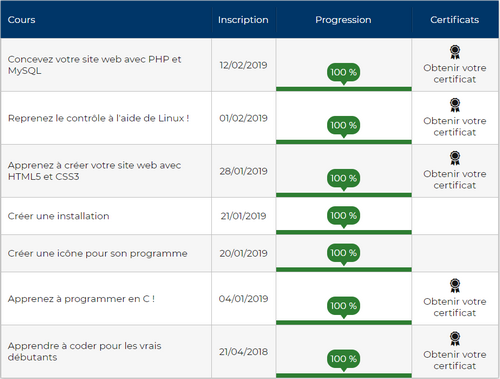
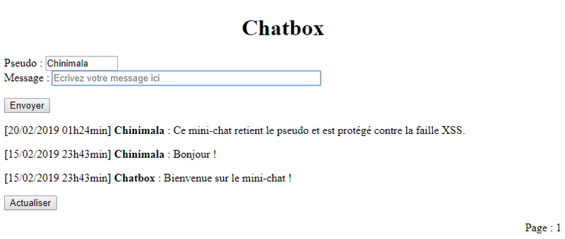
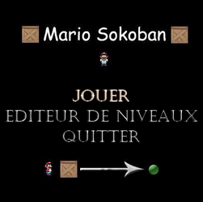
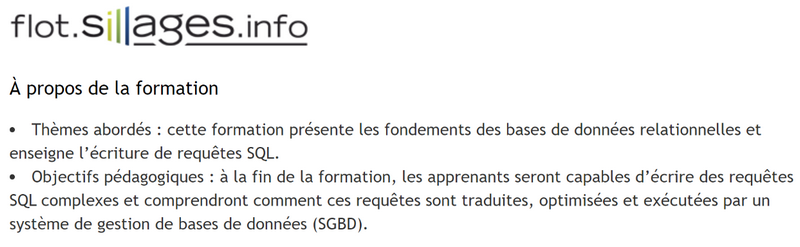
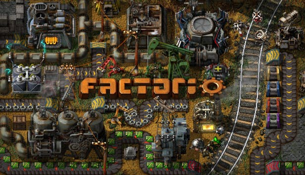

Concevez votre site web avec PHP et MySQL
Février 2019, Open Classrooms
Mini-chat
Blog
Reprenez le contrôle à l'aide de Linux !
Février 2019, Open Classrooms
Générateur de galerie d'images
Statistiques sur un dictionnaire
Apprenez à créer votre site web avec HTML5 et CSS3
Janvier 2019, Open Classrooms
Mon premier CV
Apprenez à programmer en C !
Janvier 2019, Open Classrooms
Pendu (jeu console)
Mario Sokoban
Jeu de tir
Bases de données relationnelles Décembre 2018, Flot Sillages
Apprendre à coder pour les vrais débutants
Décembre 2018, Open Classrooms
Visual C#, Blend
Professeure de mathématiques certifiée
Septembre-Décembre 2018, Collège du Puits de la Roche, Richelieu
Année scolaire 2017-2018, Collège Lucie et Raymond Aubrac, Luynes
Emploi d'avenir professeur de mathématiques
Octobre 2013 - Septembre 2015, Lycée Jules Lesven, Brest
Préparation de cours, aide aux devoirs
Stage de soutien en mathématiques Décembre 2012, Lycée professionnel maritime Jacques Cassard, Nantes
Master de Préparation à l'agrégation de mathématiques
2016, Université de Bretagne Occidentale
Mention Très Bien
Licence de Mathématiques
2014, Université de Bretagne Occidentale
Mention Très Bien
L1 mi-informatique avec réalisation d'un Tetris complet à 2 joueurs sous Visual basic
Mon objectif à court terme est d'intégrer une formation pour un retour rapide à l'emploi. Heureusement, les choix ne manquent pas ! Formations en école ou en ligne, continue ou en alternance, longues ou rapides, et toutes prometteuses d'emploi.
Voici deux des écoles qui m'intéressent :
L'école 101 A Lyon, cette école "42-like" ouverte 24h/24 toute l'année propose une pédagogie très particulière sans professeur, basée sur le peer-to-peer. Je vais à la Piscine cet été !
CEFIM A Tours, cette école du Web et des Réseaux propose aussi une pédagogie de projets. C'est la formation Développeur Web (et Web Mobile) qui m'intéresse.
Les jeux vidéos
En ce moment, c'est surtout Rocket League, League Of Legends, Dead by Daylight et Factorio. J'adore coopérer pour rire et réfléchir ensemble !

Les jeux de plateau
Une centaine de jeux dans nos étagères. Notre dernière partie fut sur le jeu Terraforming Mars, un très bon jeu de plateau/cartes où il faut être celui qui a le plus participé à coloniser Mars.
"Teach your kids to play boardgames and they will never have money for drugs."
Les puzzles J'ai résolu 7 puzzles allant de 1000 à 5000 pièces. Le puzzle du moment fait 4000 pièces et représente une cascade.
Pour le design, je me suis basé sur un modèle de CV de Word.
Pour le code, je suis partie de "Mon premier CV" (voir Formation en ligne).
J'ai appris beaucoup de choses en réalisant cette page !
{kind=link}